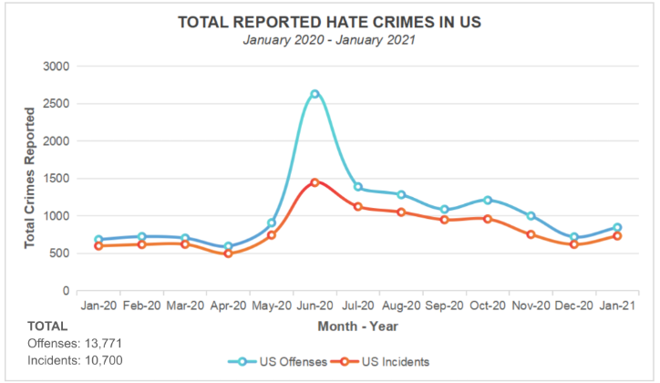
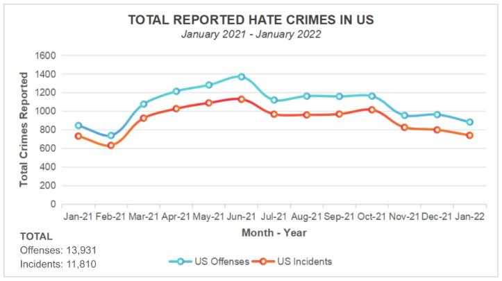
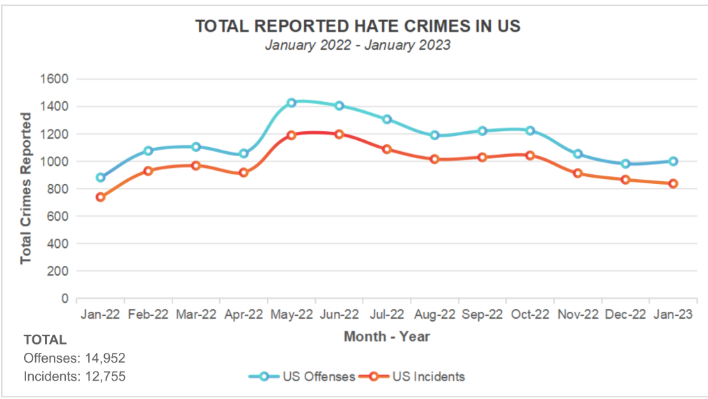
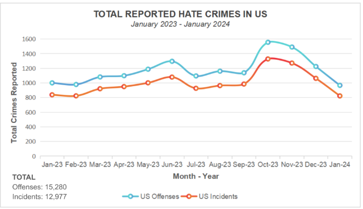
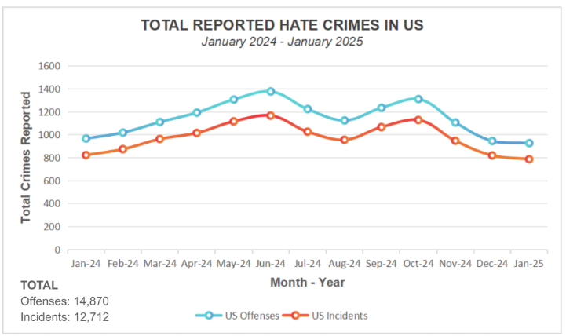

Graph 1.1: Hate Crime Reports in US in Year 1
Graph 1.1 shows US Hate Crimes in Year 1 offenses (13,771) were higher than incidents (10,700). The highest peak for both occurred in June ( 2,628 offenses; 1,444 incidents), while its lowest occurred in April (595 offenses; 497 incidents). After that, the numbers showed smaller fluctuations for the rest of the year.

Graph 2.1: Hate Crime Reports in United States in Year 2
Graph 2.1 portrays the gradual fluctuation of US Hate Crimes in Year 2 (offenses: 13,931; incidents: 11,810) throughout the year. Both offenses and incidents rose steadily from February (739 offenses; 632 incidents), to its highest peak in June (1,370 offenses; 1,128 incidents), before gradually fluctuating moderately for the remainder of the year.

Graph 3.1: Hate Crime Reports in United States in Year 3
Another increase in crime rates has been seen in Year 3 (offenses: 14,952; incidents 12,755). Both rose steadily from January (883 offenses; 740 incidents) to their highest peaks around May–June (1,427 offenses in May; 1,198 incidents in June), before gradually declining for the remainder of the year.

Graph 4.1: Hate Crime Reports in United States in Year 4
Graph 4.1 presents the fluctuation of crimes in Year 4, with offenses totaling 15,280 and incidents 12,977 over the period. Both of which increased from January (1,001 offenses; 838 incidents) to a mid-year peak around June (1,296 offenses; 1,080 incidents), before dipping slightly in the following months. After that, both series surged sharply to their highest point in October (1,556 offenses; 1,328 incidents), before declining again toward the end of the year.

Graph 5.1: Hate Crime Reports in United States in Year 5
Graph 5.1 shows that Year 5 has a total offense of 14,870 and incidents of 12,712. Both have risen steadily from January (967 offenses; 823 incidents) to a mid-year peak in June (1,377 offenses; 1,167 incidents), followed by a secondary peak around October (1,311 offenses; 1,129 incidents). The lowest counts are recorded at the end of the period (January 2025: 927 offenses; 484 incidents).